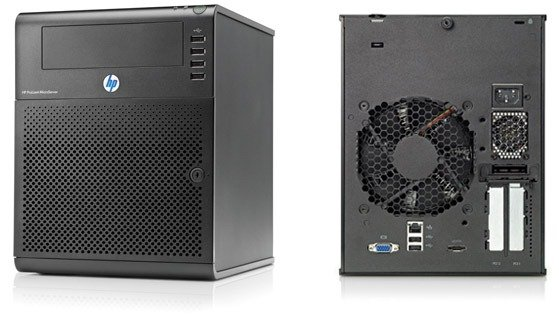

Background
Around 4-5 years ago I decided I needed a NAS. I didn’t particularly have a need for it. But I like tinkering with stuff and had a movie collection going into several TBs so I thought it would be a good idea to be able to access them over the network. Usually a NAS is great for environments where lots of users want access to the same data, for example - a shared media library for a family. As I was living in a shared apartment in London at the time I was going to be the main(only) user of it. But the NAS would still allow me to stream things to different devices - Laptop, Tablet or TV without having to plug in HDMI cables so I could justify it somewhat. I got a good deal on a HP microserver. I installed Windows Home Server[^n], Plex, uTorrent and a few other things on it to make it work as a NAS. And that is how it stayed for over four years.
Recently one of the HDDs in the server failed and I had to replace it. I also took the opportunity to make some major changes to my NAS. I reformatted the drives to XFS and made the switch from WHS to OpenMediaVault - a Linux based OS for NAS boxes. This is something I had been meaning to do for a long time.
Over the years I have learned a fair bit about the myriad of options there are for setting up a NAS. Depending upon your budget, needs and patience with technology one of these might also work for you. Here is a rough overview of what a NAS is and some popular hardware and software options for setting up a NAS. My reccomendations are at the end.
What exactly is a NAS?
A computer/box like thing that sits in a dark corner of your house and does one thing - stores your large collection of (legally obtained) movies, TV shows, backups and porn other junk.
Why might you want one?
A NAS doesn’t just store your data it also allows you to access it from multiple devices. So you could be streaming Simpsons while your wife and kids are watching whatever those people watch on a tablet or their computers.
If you already have a TB or two of Movies and TV shows on your laptop or an external drive you really do need a NAS. I suspect you won’t need much convincing either.
Why might you not want one?
Netflix. In a word. If Netflix meets your Movies, TV streaming needs and you have other ways of keeping your photos and other important files safe then not much point in having a NAS. I have had a large collection of movies from the pre-Netflix days and even though I too went through my Netflix and chill phase I am now back to downloading stuff. Mostly because I can and also because Netflix doesn’t have everything I want to watch.
There are a ton of hardware and software options you can go with if you decide to get one. Here are a few I am familiar with -
Hardware Options
Old cheapie computer
You don’t need to go out and buy a new computer to taste the benefits of a NAS. You might have an old computer hanging around somewhere in the house. Your parents computer they don’t use anymore or the one you used to use before switching to a laptop/tablet. Get it out of storage. Give it a good cleanup and make sure it still works. If it has a SATA port(anything after 2009 should have it) you are in business.
Share the files you want to access from elsewhere and leave the computer running 24x7. And that is it, you’ve got yourself a NAS.
pros
- cheap startup cost
- cheap HDDs
- Easy to add more HDDs later
cons
- probably doesn’t look good
- takes more space than necessary
- not quiet or power efficient
You can also opt for an old laptop which in places with undependable power supply like India makes a lot of sense. You can avoid having to get a UPS with a laptop and they are usually a lot more power efficient. However laptops also usually can only take one HDD[^n] . Laptop drives are also usually more expensive than the desktop drives.
Ready made NAS
If you’ve got the money in the bank or don’t mind owing a bit more to the credit card companies this option will work for you. Just search for a Synology or Qnap NAS that fits your budget and storage requirements and hit the buy button.
pros
- Dead easy to set up
- Small form factor
cons
- Expensive
- Underspecced
Custom built system
If you have built computers in the past and have some serious data storage requirements you might be better off buying the parts and building a server yourself. A motherboard with a passively cooled CPU and a case with lots of drive bays will be things you need. But I am probably preaching to the choir right now so I will stop.
Pros
- Extremely flexible
Cons
- Usually more expensive than a brebuilt server
Microserver
Middle path between a ready-made NAS and a custom build. This is also the option I went with. These devices are marketed as general purpose servers(don’t get scared by that word. Servers are just computers made for 24x7 service) and usually don’t come with an OS.
But as they are servers they are designed for 24x7 operation while being small and efficient. Those are exactly the things you want in a NAS too. And afterall a NAS is also kind of a server that kicks ass at serving files. As a tradeoff you need to spend some time installing a OS and setting it up the way you like.

HP proliant microserver N40L
It is small - looks more like a subwoofer than a PC .
It is cheap - costed me £100 after £100 cash back :)
It is very well made
Software options
Ready-made NAS boxes come with an OS pre-installed that is tweaked to function as a NAS. So when you get the device you can just plug it in and then browse to its ip address. You can then do the rest of the fairly simple setup from there.
If you are reuising an old PC or setting up a new system to function as a NAS there are a number of OS options to chose from. My pick is ‘OpenMediaVault’ for most home uses but I am going to list most of the popular ones anyway.
Ubuntu from scratch
Only fit for people with a little bit of Linux experience.
Pros
- extremely flexible - make your server do anything - almost
- OSS
Cons
- only for hardcore geeks
- No webui
- lot of work required for set up
FreeNAS
Pros
- OSS
- Eterprise grade
Cons
- Cant start with filled hdds
- ZFS
- high resource requirements
- Adding HDDs later will be tricky
Unraid
Pros
- runs from USB by default
- good forums
Cons
- not OSS
Nas4Free
Cons
- old/outdated
OMV
Pros
- easy
- any filesystem would do
WHS11
- Windows
- Costs money for the OS and addition software
- higher than linux resource requirements
- Can’t run from USB (all other options can)
- really nice looking software available to manage things
other options : Synology OS,
####Data protection
HDDs fail. All of them at some point of time. But if you have more than 2-3 you are almost guarenteed a failure within a few years. Because.. thats how probability works.
So to protect against data loss from HDD failure you need to make sure your NAS can somehow get the data back after a HDD failure.
This is where software RAID comes in.
SoftwareRAID
Also called snapshot raid. You dedicate one HDD in your system to act as the insurance policy for the rest. Each night a piece of software will calculate ‘parity’ information and store it in this drive(called the parity drive). If one of your main hard drives fail then the data on it can be recreated on a new HDD by using the parity info and data on the remaining drives.
Options -
Snapraid, flexraid, zfs, unRAID
Snapraid is OSS and flexraid is not
Flexraid has a UI, snapraid does not
Drive pooling
Having your data on more than two drives can get confusing. You don’t want to look through your data on multiple drives before finding it. WOuldn’t it be great if somehow you could merge all the drives together and have them behave as one.
Options–
on windows - drivepool- does the job perfectly. Not OSS but worth every penny/paisa
other OSs - Aufs, greyhole etc. MergerFS - almost the same as drivepool but not as polished. zfs
####Filesystems
on windows - NTFS
other OSs - EXT4, XFS, ZFS, Btrfs, Rieserfs
EXT4 and XFS are standard linux filesystems
ZFS is NAS focused with bult in snapshots and pooling
Btrfs, Riserfs - more experimental. If you want them you must also know why.
Reccomendations
Here are my reccomendations for the option to pick for different kinds of users.
High Budget, Low technical skill
Get a readymade NAS device. Duh.
Low Budget, Medium technical skill
Hardware - Old computer
Software - Unraid or OMV
High Budget, Medium technical skill, more than 10 TB storage required
Hardware - Custom build
Software - WHS + DrivePool+ Snapraid
Medium budget, Medium technical skill, less than 10TB storage required
Hardware - Microserver
Software - WHS + Drivepool + Snapraid
or
Software - OMV + Snapraid + MergerFS
High Budget, High technical skill, more than 10TB storage required
Hardware - custom build
Software - FreeNAS + ZFS
resources : reddit/datahoarder, reddit/homeserver